Section 1 Activities
Worksheet Lesson 1.1 Variables
Activity 1.1. Reading a Graph.
The graph shows the U.S. unemployment rate during the years surrounding the Great Depression.

a.
What was the unemployment rate in 1930?
b.
When did the unemployment rate first reach 15%?
c.
When did the unemplyment rate reach its highest value? What was the unemployment rate at that time?
d.
After 1930, when was the first time the unemployment rate fell below 10%?
e.
During which year did the unemployment rate show the greatest increase? During which year did it show the greatest decrease?
f.
Complete the table:
| Year | Unemploy- ment Rate |
Labor Force (millions) |
Number Unem- ployed |
Year | Unemploy- ment Rate |
Labor Force (millions) |
Number Unem- ployed |
| 1929 | 48.0 | 1936 | 53.3 | ||||
| 1930 | 48.8 | 1937 | 54.1 | ||||
| 1931 | 49.6 | 1938 | 54.9 | ||||
| 1932 | 50.3 | 1939 | 55.6 | ||||
| 1933 | 51.1 | 1940 | 56.2 | ||||
| 1934 | 51.9 | 1941 | 57.5 | ||||
| 1935 | 52.6 | 1942 | 60.4 |
g.
During which year did the number of unemployed workers increase the most?
Activity 1.2. Writing Mathematical Sentences.
-
Barry lives with his aunt while he attends college. Every week he gives her $20 from his paycheck to help pay for groceries. Fill in the table:
Barry's paycheck 45 60 75 100 125 \(p\) Calculation \(45-20\) \(\hphantom{60-20 }\) \(\hphantom{75-20 }\) \(\hphantom{100-20 }\) \(\hphantom{125-20 }\) \(\hphantom{p - 20 }\) Amount he keeps \(25\) Explain in words how to find the amount Barry keeps from his paycheck.
-
Write your explanation as a mathematical sentence:
\begin{equation*} \text{Amount he keeps} =\phantom{Amount he keeps} \end{equation*} Let \(p\) stand for the amount of Barry's paycheck and \(k\) for the amount he keeps. Write an equation for \(k\) in terms of \(p\text{.}\)
Plot the points from the table and connect them with a smooth curve.
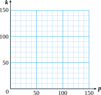 -
Liz makes $6 an hour as a tutor in the Math Lab. Her wages for the week depend on the number of hours she works. Fill in the table.
Hours worked 3 5 6 8 15 \(h\) Calculation \(6 \times 3\) \(\hphantom{6 \times 3 }\) \(\hphantom{6 \times 3}\) \(\hphantom{6 \times 3 }\) \(\hphantom{6 \times 15}\) \(\hphantom{6h }\) Wages \(18\) Explain in words how to find Liz's wages for the week.
-
Write your explanation as a mathematical sentence:
\begin{equation*} \text{Wages} =\phantom{Amount she earns} \end{equation*} Let \(h\) stand for the number of hours Liz worked and \(w\) for her wages. Write an equation for \(w\) in terms of \(h\text{.}\)
Plot the points from the table and connect them with a smooth curve.
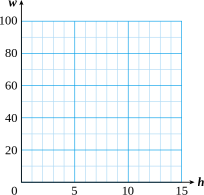
-
Wrap-Up 1.1.
In this Lesson we practiced the following skills:
Reading values from a graph
Plotting points from a table of values
Describing a relationship between two variables
Writing an equation relating two variables
In Activity 1.1e, how do we calculate the increase in unemployment rate?
In Activity 1.1f, were more people unemployed in 1931 or 1940?
In Activity 1.2, is the first row of the table plotted on the horizontal axis or the vertical axis?
Write an equation for \(y\) in terms of \(x\text{.}\)
1.
| \(x\) | 1 | 2 | 5 | 8 |
| \(y\) | 9 | 10 | 13 | 16 |
2.
| \(x\) | 6 | 12 | 24 | 30 |
| \(y\) | 1 | 2 | 4 | 5 |
3.
| \(x\) | 5 | 7 | 8 | 10 |
| \(y\) | 3 | 5 | 6 | 8 |
4.
| \(x\) | 1 | 3 | 5 | 7 |
| \(y\) | 4 | 12 | 20 | 28 |
5.
| \(x\) | 2 | 4 | 6 | 9 |
| \(y\) | 10 | 8 | 6 | 3 |
6.
| \(x\) | 4 | 8 | 12 | 20 |
| \(y\) | 3 | 6 | 9 | 15 |
Matt wants to travel 240 miles to visit a friend over spring break. He is deciding whether to ride his bike or drive. If he travels at an average speed of \(r\) miles per hour, then the trip will take \(t\) hours. Use the graph to answer the questions.
7.
If Matt can ride at an average speed of 15 miles per hour, how long will the trip take?
8.
If Matt wants to arrive in 8 hours, what average speed will he need to maintain?
9.
How long will the trip take if Matt drives at 60 miles per hour?
10.
If Matt doubles his speed, what happens to his travel time?
Solutions Answers to Homework Preview
1.1.
1.2.
1.3.
1.4.
1.5.
1.6.
1.7.
1.8.
1.9.
1.10.
Worksheet Lesson 1.2 Algebraic Expressions
Activity 1.3. Writing Algebraic Expressions.
To write an algebraic expression.
- Step 1
Identify the unknown quantity and write a short phrase to describe it.
- Step 2
Choose a variable to represent the unknown quantity.
- Step 3
Use mathematical symbols to represent the relationship described.
Study the Examples below, then write an expression for each Exercise.
Example 1.2. Write an algebraic expression for each quantity.
- 3 feet more than the length of the rug
- Twice the age of the building
-
Steps 1–2: The length of the rug is unknown.
\begin{equation*} \blert{\text{Length of the rug: }\quad l} \end{equation*}Step 3: The words "more than" indicate an addition: \(\quad\blert{l+3}\)
-
Steps 1–2: The age of the building is unknown.
\begin{equation*} \blert{\text{Age of the building: }\quad a} \end{equation*}Step 3: "Twice" means two times: \(\quad\blert{2a}\)
1.
Write an algebraic expression for each quantity.
-
Ten more than the number of students
Steps 1–2
Step 3
-
Five tiimes the height of the triangle
Steps 1–2
Step 3
-
4% of the original price
Steps 1–2
Step 3
-
Two and a quarter inches taller than last year's height
Steps 1–2
Step 3
The next example involves subtaction and division
Example 1.3. Write an algebraic expression for each quantity.
- 5 square feet less than the area of the circle
- The ratio of your quiz score to 20
-
Steps 1–2: The area of the circle is unknown.
\begin{equation*} \blert{\text{Area of circle: }\quad A} \end{equation*}Step 3: "Less than" indicate subtraction: \(\quad\blert{A-5}\)
-
Steps 1–2: Your quiz score is unknown.
\begin{equation*} \blert{\text{Quiz score: }\quad s} \end{equation*}Step 3: A "ratio" is a fractions: \(\quad\blert{\dfrac{s}{20}}\)
2.
Write an algebraic expression for each quantity.
-
$60 less than first-class airfare
Steps 1–2
Step 3
-
The quotient of the volume of the sphere and 6
Steps 1–2
Step 3
-
The ratio of the number of gallons of alcohol to 20
Steps 1–2
Step 3
-
The current population diminished by 50
Steps 1–2
Step 3
3.
Each of the words listed refers to one of the four arithmetic operations. Group them under the correct operation.
| times | take away | sum of | divided by |
| less than | reduced by | twice | (fraction) of |
| increased by \(\quad\) | product of | more than \(\quad\) | quotient of |
| exceeded by | deducted from \(\quad\) | ratio of | total |
| difference of | split | minus | per |
- addition
- subtraction
- multiplication
- division
Activity 1.4. Evaluating Algebraic Expressions.
Example 1.4.
The Appliance Mart is having a store wide 15%-off sale. If the regular price of an appliance is \(P\) dollars, then the sale price \(S\) is given by
How much is a regrigerator that regularly sells for $600?
We substitute \(\alert{600}\) for the regular price \(P\text{,}\) in the expression
The sale price is $510.
1.
Evaluate the algebraic expression in the Example above to complete the table below showing the sale price for various appliances.
| \(P\) | 120 | 200 | 380 | 480 | 520 |
| \(S\) |
Complete each table by evaluating the expression.
2.
| \(x\) | 1 | 2 | 10 | 100 |
| \(0.65x\) | \(\hphantom{000}\) | \(\hphantom{000}\) | \(\hphantom{000}\) | \(\hphantom{000}\) |
3.
| \(n\) | 0.1 | 0.5 | 0.75 | 1 |
| \(n-0.05\) | \(\hphantom{000}\) | \(\hphantom{000}\) | \(\hphantom{000}\) | \(\hphantom{000}\) |
4.
| \(a\) | 6 | 8 | \(\dfrac{3}{4} \) | \(\dfrac{6}{5} \) |
| \(\dfrac{2}{3}a \) | \(\hphantom{000}\) | \(\hphantom{000}\) | \(\hphantom{000}\) | \(\hphantom{000}\) |
5.
| \(h\) | 1 | \(\dfrac{5}{4} \) | \(2\dfrac{1}{2} \) | 3 |
| \(h-\dfrac{3}{4} \) | \(\hphantom{000}\) | \(\hphantom{000}\) | \(\hphantom{000}\) | \(\hphantom{000}\) |
6.
| \(w\) | 0.1 | 0.5 | \(0.75\) | \(1.2 \) |
| \(2-w \) | \(\hphantom{000}\) | \(\hphantom{000}\) | \(\hphantom{000}\) | \(\hphantom{000}\) |
7.
| \(p\) | 0.1 | \(0.5 \) | \(1 \) | 4 |
| \(\dfrac{p}{0.4} \) | \(\hphantom{000}\) | \(\hphantom{000}\) | \(\hphantom{000}\) | \(\hphantom{000}\) |
Activity 1.5. Using Algebraic Formulas.
Write down the five Useful Algebraic Formulas from the Reading, as algebraic expressions and in words.
| Formula | Meaning in Words | |
| 1. | \(\hphantom{long Formula}\) | \(\hphantom{Meaning in Words Meaning in Words}\) |
| 2. | ||
| 3. | ||
| 4. | ||
| 5. |
For the exercises below,
- Choose the appropriate formula and write an algebraic expression.
- Evaluate the expression to answer the question.
1.
It cost Ariel $380 to buy supplies and advertising for her pet-sitting business.
- Write an expression for her profit from the business.
- If Ariel earned $820 in revenue, what was her profit?
2.
Jamie cycled for \(2\frac{1}{2}\) hours this morning.
- Write an expression for the distance Jamie cycled.
- If Jamie's average speed was 9 miles per hour, how far did she cycle?
3.
SaveOurPark collected $2600 in donations from people in the neighborhood.
- Write an expression for the average amount that eah person donated.
- If 142 people made a donation, what was the average donation?
Wrap-Up 1.5.
In this Lesson we practiced the following skills:
Writing an algebraic expression
Evaluating an algebraic expression
Choosing an appropriate formula
What is the first step in evaluating an algebraic expression?
What does it mean to evaluate an algebraic expression?
-
Give definitions for the following terms:
\(\qquad\)revenue, principal, percentage rate, average, perimeter
Write algebraic expressions.
1.
The ratio of 6 to \(x\)
2.
\(x\) decreased by 6
3.
6% of \(x\)
4.
One-sixth of \(x\)
5.
8 less than \(x\)
6.
\(H\) increased by 14
Choose a variable and write an algebraic expression.
7.
The ratio of your quiz score to 20
8.
3 feet more than the length of the rug
9.
Twice the age of the building
10.
$6 less than the sales price
Use a formula to write an expression.
11.
Maria's revenue was \(D\) dollars, and her costs were $100. What was her profit?
12.
Gertrude earned \(P\) points on 5 quizzes. What was her average score?
13.
49.2% of the voters favored your candidate. If \(V\) people voted, how many favored the candidate?
14.
The height of a triangle is 6 inches and its base is \(n\) inches. What is the area?
Solutions Answers to Homework Preview
1.1.
1.2.
1.3.
1.4.
1.5.
1.6.
1.7.
1.8.
1.9.
1.10.
1.11.
1.12.
1.13.
1.14.
Worksheet Lesson 1.3 Equations and Graphs
To graph an equation.
- Step 1
Make a table of values.
- Step 2
Choose scales for the axes.
- Step 3
Plot the points and connect them with a smooth curve.
Activity 1.6. Making a Graph.
1.
Laura takes her daughter Stefanie berry-picking at a local strawberry farm. Laura can pick three baskets of strawberries in the same time that Stefanie picks one basket.
Let \(L\) stand for the number of baskets Laura ha picked and \(S\) for the number of baskets thaat Stefanie has picked. Write an equation relating the variables.
-
Graph the equation.
- Step 1
-
Make a table of values. Choose some reasonable values for \(S\text{,}\) such as
\(S\) 1 2 4 6 10 \(L\) \(\hphantom{000}\) \(\hphantom{000}\) \(\hphantom{000}\) \(\hphantom{000}\) \(\hphantom{000}\) Use the equation to find the corresponding values of \(L\text{.}\) For example, when \(S=\alert{1} \text{,}\)
\begin{equation*} L=\hphantom{0000000000} \end{equation*}and when \(S=\alert{2} \text{,}\)
\begin{equation*} L=\hphantom{0000000000} \end{equation*}Complete the table.
- Step 2
-
Label the horizontal axis with the input variable, and the vertical axis with the output variable. Then label the scales on the axes.
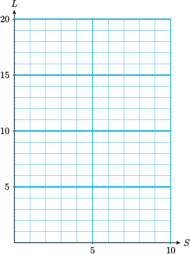 - Step 3
Plot the points in the table and connect them with a smooth curve. The points on this graph lie on a straight line.
2.
Emily and Megan pledged to walk a total of 12 miles for their school's fundraising walkathon. Let \(E\) stand for the number of miles Emily walks, and \(M\) for the number of miles Megan walks.
Write an equation for \(E\) in terms of \(M\text{.}\)
-
Make a table of values and graph the equation,
\(M\) \(E\) \(\hphantom{000}\) \(\hphantom{000}\) \(\hphantom{000}\) \(\hphantom{000}\)
Activity 1.7. Choosing Scales for the Axes.
1.
Corey's truck holds 20 gallons of gasoline and gets 18 miles to the gallon.
Write an equation that relates the distance, \(d\text{,}\) that Corey can travel to the number of gallons of gas, \(g\text{,}\) in his truck.
-
Graph the equation.
- Step 1
-
Make a table of values. Choose values of \(g\) between 0 and 20, because Corey's truck holds 20 gallons of gas. Use the equation to calculate the values of \(d\text{.}\)
\(g\) 2 5 8 10 15 20 \(d\) \(\hphantom{000}\) \(\hphantom{000}\) \(\hphantom{000}\) \(\hphantom{000}\) \(\hphantom{000}\) \(\hphantom{000}\) - Step 2
-
Choose scales for the axes: Use 10 grid lines on the horizontal axis. The length of each interval is
\begin{equation*} 20\div 10=\underline{\qquad\qquad\qquad}\text{ units} \end{equation*}so we can scale the horizontal axis in intervals of 2. On the vertical axis, we use increments of 25 from 0 to 400, which gives us 16 grid lines.
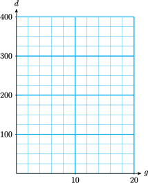 - Step 3
Plot the points from the table of values. You will need to estimate the location of some of the points between tick marks.
2.
The Harris Aircraft company gave all its employees a 5% raise.
Write an equation that expresses each employee's raise, \(R\) in terms of his or her salary, \(S\text{.}\)
-
Graph the equation.
- Step 1
-
Complete the table of values.
\(S\) 18,000 24,000 32,000 36,000 \(R\) \(\hphantom{00000000}\) \(\hphantom{00000000}\) \(\hphantom{00000000}\) \(\hphantom{00000000}\) - Step 2
-
Choose scales for the axes and label them. (What are the largest values of \(S\) and \(R\) in your table?)
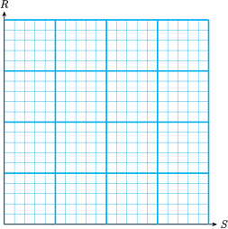 - Step 3
Plot the points and draw the graph.
Activity 1.8. Using a Graph.
The Reedville City Council voted that 35% of the town's budget should be allotted to education.
a.
Write an equation for the amount budgeted for education, \(s\text{,}\) in terms of the total budget \(b\text{.}\)
Use your equation to answer the following questions.
b.
If Reedville's total budget for next year is $1,800,000, how much will be allotted for education?
c.
If Reedville spent $875,000 on education last year, what was its total budget?
Here is a graph of the equation from part (a). Both axes of the graph are scaled in thousands of dollars. Use the graph to estimate the answers to the parts (b) and (c). Show directly on the graph how you obtained your estimates.
Wrap-Up 1.6.
In this Lesson we practiced the following skills:
Making a table of values
Choosing scales for the axes
Plotting points and drawing a curve
Using a graph to evaluate an expression or solve an equation
If you graph the equation \(Q=M+12\text{,}\) which variable goes on the horizontal axis?
If the output values range from 0 to 6000, what would be a good interval to use fo the scale on the vertical axis?
In Activity 1.6b, did we evaluate an expression or solve an equation?
Write algebraic expressions.
1.
Draw axes and label both scales by 5's from 0 to 30.
2.
Draw axes and laabel the horizontal scale by 25's, from 0 to 200, and the vertical scale by 200's, from 0 to 3000.
3.
What interval does each grid line represent on the horizontal axis? On the vertical axis?
-
Plot the following points on the grid:
\((0,500) \text{,}\) \((20,1750)\) , \((40,250)\)
4.
What interval does each grid line represent on the horizontal axis? On the vertical axis?
Find the coordinates of each point.
Solutions Answers to Homework Preview
1.1.
1.2.
1.3.
1.4.
Worksheet Lesson 1.4 Solving Equations
Activity 1.9. Opposite Operations.
We can use opposite or inverse operations to "undo" an algebraic expression.
1.
Francine is exactly four years older than Delbert, so
where \(D\) stands for Delbert's age and \(F\) stands for Francine's age. Fill in the missing values in the table, and think about how you found each one.
| \(D\) | 5 | 7 | \(\hphantom{000}\) | 10 | 18 | |
| \(F\) | \(\hphantom{000}\) | \(\hphantom{000}\) | 12 | \(\hphantom{000}\) | 19 | \(\hphantom{000}\) |
When we are given a value of \(D\text{,}\) we 4 to find the value of \(F\text{.}\) (Why?)
When we are given a value of \(F\text{,}\) we 4 to find Delbert's age. (Why?)
2.
Fernando plans to share an apartment with three other students and split the rent equally.
Let \(r\) stand for the rent on the apartment and \(s\) for Fernando's share. Write an equation for \(s\) in terms of \(r\text{.}\)
-
Fill in the table.
\(r\) 260 300 \(\hphantom{0000}\) 360 480 \(s\) \(\hphantom{0000}\) \(\hphantom{0000}\) 80 \(\hphantom{0000}\) 105 \(\hphantom{0000}\) -
Explain how you found the unknown values of \(s\text{.}\)
Explain how you found the unknown values of \(r\text{.}\)
Activity 1.10. Solving Equations Algebraically.
Follow the Examples beow to write out the solutions to each Exercise.
Caution 1.7.
Do not do the problems in your head! Soon we will encounter equations that cannot be solved so easily. In order to learn the algebraic method, it is important for you to write down the steps of your solution.
Example 1.8.
\(\begin{aligned}[t] \text{Solve } x+6\amp = 11\amp \amp\blert{\text{Step 1}} \qquad\ \blert{6 \text{ is added to the variable.}}\\ x+6\amp =11\amp \amp\blert{\text{Step 2}} \qquad \blert{ \text{We subtract 6 from both sides.}}\\ \underline{\blert{-6}} \amp \hphantom{=} \underline{\blert{-6}} \\ x\hphantom{+6} \amp= \, 5 \amp\amp\blert{\text{The solution is 5.}}\\ \amp\amp\amp \blert{\text{Check: } 5+6=11} \end{aligned}\)
1.
Solve \(5+y=9\)
Example 1.9.
\(\begin{aligned}[t] \text{Solve } n-17\amp = 32\amp \amp\blert{\text{Step 1}} \qquad\ \blert{17 \text{ is subtracted from the variable.}}\\ n-17\amp =32\amp \amp\blert{\text{Step 2}} \qquad \blert{ \text{We add 17 to both sides.}}\\ \underline{\blert{+17}} \amp \hphantom{=} \underline{\blert{+17}} \\ n\hphantom{+17} \amp= 49 \amp\amp\blert{\text{The solution is 49.}}\\ \amp\amp\amp \blert{\text{Check: } 49-17=32} \end{aligned}\)
2.
Solve \(x-4=12\)
Example 1.10.
\(\begin{aligned}[t] \text{Solve } 12x\amp = 60\amp \amp\blert{\text{Step 1}} \qquad\ \blert{\text{The variable is multiplied by 12.}}\\ \dfrac{12x}{\blert{12}} \amp =\dfrac{60}{\blert{12}}\amp \amp\blert{\text{Step 2}} \qquad \blert{ \text{We divide both sides by 12.}}\\ x \amp= 5 \amp\amp\blert{\text{The solution is 5.}}\\ \amp\amp\amp \blert{\text{Check: } 12(5)=60} \end{aligned}\)
3.
Solve \(6z=24\)
Example 1.11.
\(\begin{aligned}[t] \text{Solve } \frac{w}{7}\amp= 21 \amp \amp\blert{\text{Step 1}} \qquad\ \blert{\text{The variable is divided by 7.}}\\ \blert{7} \left(\frac{w}{7}\right) \amp= \blert{7}(21) \amp \amp\blert{\text{Step 2}} \qquad \blert{ \text{We multiply both sides by 7.}}\\ w \amp= 147 \amp\amp\blert{\text{The solution is 147.}}\\ \amp\amp\amp \blert{\text{Check: } \dfrac{147}{7}=21} \end{aligned}\)
4.
Solve \(\dfrac{w}{3}=6 \)
Activity 1.11. Using Formulas.
The distance from Los Angeles to San Francisco is approximately 420 miles. How long will it take a car traveling at 60 miles per hour to go from Los Angeles to San Francisco? Follow the steps to solve the problem:
\(\blert{\text{1) Write down the appropriate formula.}} \)
\(\blert{\text{2) List the give values of the variable.}} \)
\(\blert{\text{3) Which variable is unknown?}} \)
\(\blert{\text{4) Substitute the known values into the formula.}} \)
\(\blert{\text{5) Solve the equation for the unknown variable.}} \)
Answer:
Activity 1.12. Writing Equations.
In the following Exercises, concentrate on writing an equation for the problem. Use the hints to help you solve the problems.
1.
A two-bedroom house costs $20,000 more than a one-bedroom house in the same neighborhood. The two-bedroom house costs $405,000. How much does the one-bedroom house cost?
- Step 1
-
Choose a variable for the unknown quantity.
\begin{equation*} \text{Cost of the one-bedroom house: }\underline{\qquad\qquad\qquad} \end{equation*} - Step 2
-
Write an equation in terms of your variable.
\begin{equation*} \underline{\qquad\qquad\qquad}+ \underline{\qquad\qquad\qquad} = \underline{\qquad\qquad\qquad} \end{equation*}\begin{equation*} \hphantom{0} \blert{\substack{\text{cost of one-}\\\\\text{bedroom house}}} \hphantom{00000000000000000000} \blert{\substack{\text{cost of two-}\\\\\text{bedroom house}}} \end{equation*} - Step 3
Solve your equation.
The one-bedroom house costs
2.
A restaurant bill is divided equally by seven people. If each person paid $8.50, how much was the bill?
- Step 1
Choose a variable for the unknown quantity. (What are we asked to find?)
- Step 2
Write an equation. Express each person's share in two different ways.
- Step 3
Solve your equation.
The bill was
3.
Iris got a 6% raise. Her new salary is $21 a week more than her old salary. What was her old salary?
- Step 1
Choose a variable for the unknown quantity.
- Step 2
Write an equation. Express Iris's raise in two different ways.
- Step 3
Solve your equation.
Iris's old salary was
Wrap-Up 1.12.
In this Lesson we practiced the following skills:
Solving an equation algebraically
Using a formula to solve a problem
Writing an equation to model a problem
How can you check to see whether a given number is a solution of an equation?
Is the statement \(3+4=12\) an equation? Why or why not?
Is the statement \(x+4=12\) an equation? Why or why not?
Describe a two-step strategy for solving an equation algebraically.
What is the inverse operation for subtraction?
What is the inverse operation for division?
In Activity 1.12 problem 3, how do we write 6% as a decimal?
Choose the equation that best describes each situation. In each case, \(n\) represents the unknown quantity.
| \(n+5=30\) | \(\hphantom{00000}\) | \(n-5=30\) |
| \(5n=30\) | \(\dfrac{n}{5} =30\) |
1.
Five less than a number is 30.
2.
The quotient of a number and 5 is 30.
3.
The product of a number and 5 is 30.
4.
Five more than a number is 30.
5.
The price of a concert ticket increased $5 this year and is now $30. How much did a ticket cost last year?
6.
Amir spent 5 dollars and now has 30 dollars. How much did he have before he spent $5?
7.
Marty jogged the same course five days this week for a total of 30 miles. How far did he jog each day?
8.
Five brothers split the cost of a new TV, each paying $30. How much did the TV cost?
Solutions Answers to Homework Preview
1.1.
1.2.
1.3.
1.4.
1.5.
1.6.
1.7.
1.8.
Worksheet Lesson 1.5 Order of Operations
Activity 1.13. Which Operations Come First.
I. In the Reading assignment, we established the following rules.
- In a string of additions and subtractions, we perform the operations in order from left to right.
- Similarly, we perform multiplications and divisions in order from left to right.
1.
Simplify each expression.
\(30-17-5+4\)
\(72\div 4 \cdot (-3)\div 6 \)
II. Combined Operations
Always perform multiplications and divisions before additions and subtractions
2.
Simplify.
\(12-6\left(\dfrac{1}{2} \right) \)
\(2(3.5)+10(1.4) \)
III. Grouping into Terms
3.
Simplify \(12+24\div 4 \cdot 3 + 16 -10-4\)
Activity 1.14. Parentheses.
I. Parentheses
1.
Simplify each expression.
\(28-3(12-2\cdot 4) \)
\(12+36\div 4(9-2\cdot 3) \)
II. Fraction Bars
2.
Simplify \(\dfrac{8-2(6-4)}{(8-2)(6-4)} \)
- Step 1
Perform operations inside parentheses.
- Step 2
Simplify above the fraction bar — multiplication first.
- Step 3
Simplify below the fraction bar — multiplication first.
- Step 4
Reduce the fraction.
III. Summary
If an expression involves more than one type of grouping symbol (say, both parentheses and brackets), we start with the innermost grouping symbols and work outward.
3.
Follow the steps to simplify \(6+2 [3(12-5) - 4(7-3)] \)
- Subtract inside parentheses
\(6+2 [3(\blert{12-5}) - 4(\blert{7-3})] \)
- Multiply inside the brackets.
- Subtract inside the brackets.
- Multiply, then add.
4.
Follow the steps to simplify \(19+5\left[4(22-19) - \dfrac{12}{2} \right] \)
- Subtract inside parentheses.
\(19+5\left[4(\blert{22-19}) - \dfrac{12}{2} \right] \)
- Multiply inside the brackets, divide inside the brackets.
- Subtract inside the brackets.
- Multiply, then add.
Activity 1.15. Algebraic Expressions.
1.
Choose the correct algebraic expression for each phrase.
-
6 times the sum of \(x\) and 5
\begin{equation*} 6x+5\hphantom{0000}\text{ or }\hphantom{0000} 6(x+5) \end{equation*} -
\(\frac{1}{2} \) the difference of \(p\) and \(q\)
\begin{equation*} \frac{1}{2}(p-q) \hphantom{0000}\text{ or }\hphantom{0000} \frac{1}{2}p-q \end{equation*} -
4 less than the product of 6 and \(w\)
\begin{equation*} 6w-4\hphantom{0000}\text{ or }\hphantom{0000} 4-6w \end{equation*} -
2 lesss than the quotient of 10 and \(z\)
\begin{equation*} \frac{10}{z}-2 \hphantom{0000}\text{ or }\hphantom{0000} 2-\frac{10}{z} \end{equation*}
Use the tables to evaluate each of the following expressions in two steps. (The first one is done for you.) Note especially how the order of operations differs in parts (a) and (b).
2.
-
\(8+3t \)
\(t\) \(3t\) \(8+3\) 0 0 8 \(2\) \(\phantom{00}\) \(7\) -
\(3(t+8) \)
\(t\) \(t+8\) \(3(t+8)\) 0 8 24 \(2\) \(\phantom{00}\) \(7\)
3.
-
\(6+\dfrac{x}{2} \)
\(x\) \(\dfrac{x}{2}\) \(6+\dfrac{x}{2}\) 4 2 8 \(8\) \(\phantom{00}\) \(9\) -
\(\dfrac{6+x}{2} \)
\(x\) \(6+x\) \(\dfrac{6+x}{2}\) 4 10 5 \(8\) \(\phantom{00}\) \(9\)
Activity 1.16. Using Your Calculator.
1.
\(9+2\cdot 5 - 3\cdot 4\)
| By hand: | \(\hphantom{000000000000000000} \) | With a caculator: |
2.
\(6(10-2\cdot 4)\div 4 \)
| By hand: | \(\hphantom{000000000000000000} \) | With a caculator: |
3.
\(6(10-2\cdot 4)\div 4 \)
| By hand: | \(\hphantom{000000000000000000} \) | With a caculator: |
Caution 1.13.
Most calculators cannot use a fraction bar as a grouping symbol. Consider the expression \(\dfrac{24}{6-4} \) which simplifies to \(\dfrac{24}{2} \text{,}\) or 12. If we enter the expression into a calculator as
we get 0, which is not correct. This is because the calculator follows the order of operations and calculates \(24\div 6\) first.
If we use a calculator to compute\(\dfrac{24}{6-4} \text{,}\) we must tell the calculator that \(6-4\)should be computed first. To do this, we use parentheses and enter the expression as
We call this way of writing the expression the \(\blert{\text{in-line form}} \text{.}\)
When using a calculator, we must enclose in parentheses any expression that appears above or below a fraction bar.
4.
Use a scientific calculator to simplify the expression\(\dfrac{16.2}{(2.4)(1.5)} \)
Wrap-Up 1.14.
In this Lesson we practiced the following skills:
Simplifying expressions by following the order of operations
Using a calculator to simplify expressions
Give examples to show that the associative laws do not hold for subtraction or division.
Why should we separate an expression into its terms?
True or false: always start simplifying from left to right.
True or false: we should perform multiplications before divisions.
How do we enter expressions with fraction bars into a calculator?
Simplify.
1.
\(20-3(2) \)
\((20-3)\cdot 2 \)
2.
\(20-8-2 \)
\(20-(8-2) \)
3.
\(20-3(2+4) \)
\(20-(3\cdot 2 + 4) \)
4.
\(\dfrac{20+12}{4+2} \)
\(\dfrac{20}{4}+\dfrac{12}{2} \)
5.
\(\dfrac{25-8}{5} \)
\(\dfrac{40}{8}-\dfrac{18}{6} \)
Solutions Answers to Homework Preview
1.1.
1.2.
1.3.
1.4.
1.5.
Worksheet Lesson 2.1 Signed Numbers
Activity 1.17. Sums and Differences.
1.
Illustrate each sum on a number line, then give the answer.
-
\(2+4=\)

-
\((-4)+(-7) \)
-
\((-6)+(-3) \)
2.
Illustrate each sum on a number line, then give the answer.
-
\((+5)+(-3) =\)
-
\((-7)+(+2) \)
-
\((-5)+(+9) \)
3.
Fill in the blanks.
The sum of two positive nunbers is .
The sum of two negative nunbers is .
To add two numbers with opposite signs, their absolute values. The sum has the same sign as the number with the absolute value.
4.
Find the following sums.
\((-9)+(-2) \)
\((-14)+(-11) \)
\(4+(-12) \)
\(15+(-9) \)
\(-6+(-3) \)
\(-8+(+3) \)
\(-7+19 \)
\(18+(-10) \)
\(5+(-5) \)
\(-5+(-5) \)
5.
Illustrate each sum on a number line, then give the answer.
-
\(2-(-6) \)
-
\(-7-(-4) \)
-
\(-3-(-7) \)
6.
Rewrite each subtraction problem as an addition, then compute the answer.
\(3-(-9) \)
\(-4-(-7) \)
\(-8-(-2)) \)
Activity 1.18. Products and Quotients.
1.
Write the product \(5(-4) \) as a repeated addition, and compute the product.
2.
Compute the product.
\(5(-4) \)
\(\dfrac{-3}{4}\cdot \dfrac{1}{2} \)
\((-3)(-3) \)
\(\dfrac{-5}{3}\cdot \dfrac{-3}{10} \)
3.
Use the relationship between products and quotients to complete each statement. No calculation is necessary!
\(\dfrac{8190}{26}= \underline{\hphantom{00000}}\quad\) because \(\quad 26\cdot 315=8190 \)
\(62\cdot \underline{\hphantom{00000}}=83.7 \quad \) because \(\quad\dfrac{83.7}{62} =1.35 \)
4.
Find each quotient by rewriting the division as an equivalent multiplication fact.
\(\dfrac{6}{3}=\boxed{\vphantom{\Large(}\hphantom{00}}\,\) because
\(\dfrac{6}{-3}= \boxed{\vphantom{\Large(}\hphantom{00}}\,\) because
\(\dfrac{-6}{3}=\boxed{\vphantom{\Large(}\hphantom{00}}\,\) because
\(\dfrac{-6}{-3}= \boxed{\vphantom{\Large(}\hphantom{00}}\,\) because
5.
Compute the following quotients.
\(\dfrac{-25}{-5} \)
\(\dfrac{32}{-8} \)
\(-27\div 9 \)
\(-42\div (-7) \)
6.
Fill in the blanks.
The product or quotient of two numbers with the same sign is .
The product or quotient of two numbers with opposite signs is .
7.
Find the quotient, if it exists.
\(\dfrac{0}{18} \)
\(\dfrac{13}{0} \)
\(-9\div 0 \)
\(0\div (-2) \)
8.
Use your calculator to verify that \(-\dfrac{2}{5}=\dfrac{-2}{5}=\dfrac{2}{-5} \)
Does \(-\dfrac{2}{5}=\dfrac{-2}{-5}\text{?}\)
Wrap-Up 1.15.
In this Lesson we practiced the following skills:
Illustrating sums and differences on a number line
Performing operations on signed numbers
Write a subtraction as an equivalent addition
Delbert says that "two negatives make a positive." For which operations is he correct, and for which is he incorrect?
How do we convert a subtraction of signed numbers into an addition? Give an example.
-
True or false:
\(\dfrac{-2}{2}=0 \)
\(\dfrac{2}{0}=0 \)
\(-2-2=0 \)
\(-2(-2)=0 \)
Does the negative sign in a fraction such as \(-\dfrac{5}{2} \) apply to the numberator, the denominator, or both?
Perform the operations.
1.
\(8+(-4) \)
\(8-(-4) \)
\(-8-(-4) \)
\(-8-(-4) \)
2.
\(8(-4) \)
\(-8(-4) \)
\(\dfrac{-8}{-4} \)
\(\dfrac{8}{-4} \)
Solve.
3.
\(7+x=-8\)
4.
\(-2x=12\)
Solutions Answers to Homework Preview
1.1.
1.2.
1.3.
1.4.
Worksheet Lesson 2.2 Expressions and Equations
Activity 1.19. Sums and Differences.
Follow the order of operations to simplify each expression.
1.
\(5-(+7)-3-(-2) \)
\(-4-(-9)-3-8 \)
\(7(-3)-2(-5) \)
\(9-4(-6)\)
2.
\(-6(-2)(-5) \)
\(-6(-2)-5 \)
\(7-6(-2-5) \)
\(-6-(2-5) \)
3.
\([-5-8]-[7-10-4] \)
\(-6+[(4-8)-(-9)] \)
\(28-3(-12-2\cdot 4) \)
\(12-36\div4(9-2\cdot3) \)
Activity 1.20. Writing Algebraic Expressions.
1.
Neda decides to order some photo albums as gifts. Each album costs $12, and the total shipping cost is $4. Neda would like an algebraic expression that describes the total cost of ordering \(a\) albums.
-
\(\blert{\text{Consider some specific values for the variable:}} \)
What is Neda's bill if she orders 3 albums? If she orders 5 albums?
For 3 albums, the bill is:
\begin{equation*} 12\cdot3+4= \end{equation*}For 5 albums, the bill is:
\(\blert{\text{Describe in words how you calculated your answers for specific values.}}\)
-
\(\blert{\text{Replace the specific values in your calculations by a variable.}} \)
If Neda orders \(a\) albums, an expression for this bill is:
Let \(B\) stand for Neda's bill, and write an equation that gives Neda's bill, \(B\text{,}\) in terms of the number of albums, \(a\text{:}\)
2.
Megan would like to buy a kayak on sale. She calculates that the kayak she wants costs $40 less than three weeks' salary.
Write an expression for the price of the kayak if Megan makes $280 per week.
If Megan makes \(w\) dollars per week, write an expression for the price of the kayak.
3.
Emily bought five rose bushes for her garden. Each rose bush cost $9 plus tax.
Write an expression for the total amount Emily paid if the tax on one rose bush is $0.45.
If the tax on one rose bush is \(t\text{,}\) write an expression for the total amount Emily paid.
Activity 1.21. Evaluating Algebraic Expressions.
1.
When a company purchases a piece of equipment such as a computer or a copy machine, the value of the equipment depreciates over time. One way to calculate the value of the equipment uses the formula
where \(C\) is the original cost of the equipment, \(t\) is the number of years since it was purchased, and \(n\) stands for the useful lifetime of the equipent in years. Find the value of a 4-year-old copy machine if it has a useful lifetime of 6 years and cost $3000 when new.
-
List the values of the variables:
\begin{equation*} C=\underline{\qquad\qquad\quad} , \quad t=\underline{\qquad\qquad\quad} , \quad n=\underline{\qquad\qquad\quad} \end{equation*} Substitute the values into the formula:
-
Simplify the expression. Follow the order of operations.
\(\blert{\text{Simplify inside the parentheses.}} \)
\(\blert{\text{Multiply.}} \)
2.
Evaluate \(8(x+xy) \) for \(x=\dfrac{1}{2} \) and \(y=-6\text{.}\)
\(\blert{\text{Substitute the values:}}\hphantom{00000000} 8\left(\dfrac{1}{2}+ \dfrac{1}{2}(-6) \right) \)
\(\blert{\text{Follow the order of operations.}} \)
3.
Evaluate \(\quad 3a(a-b)\quad \) for \(a=-4 \) and \(b=-6\)
4.
Evaluate \(\quad -2(a+b)-ab\quad \) for \(a=6\) and \(b=-3\)
Wrap-Up 1.16.
In this Lesson we practiced the following skills:
Simplifying expressions with the order of operations
Writing algebraic expressions with two or more operations
Evaluating algebraic expressions at signed numbers
Explain what is wrong with this calculation: \(9-4(-6)=5(-6=-30) \)
For "5 dollars less than the price of 3 shirts," Delbert writes \(5-3s\text{.}\) What is wrong with his expression?
In problems 2 and 3 of Activity 1.20, which expression required parentheses? Why?
When we evaluate \(ab\) for \(a=6\text{,}\) \(b=-3\text{,}\) why should we enclose \(-3\) in parentheses?
Write algebraic expressions.
1.
Boyer's history book is 600 pages long, and he reads 20 pages per night. How many pages does he have left to read after \(t\) nights?
2.
Kristi deposits $50 from her paycheck into savings, and then gives herself 15% of the rest for spending money. If her paycheck is \(p\) dollars, how much spending money does she get?
3.
The area of a pyramid is one-third the product of its length, its width, and its height.
4.
The difference of a number \(B\) and twice its reciprocal.
Evaluate.
5.
\(2m(m+p)(m-p)\qquad\) for \(\quad m=-5\) and \(p=-8\)
6.
\((z+2)(2z-1) \qquad\) for \(\quad z=\dfrac{-3}{4} \)
Solutions Answers to Homework Preview
1.1.
1.2.
1.3.
1.4.
1.5.
1.6.
Worksheet Lesson 2.3 Graphs of Linear Equations
Activity 1.22. Graphing Equations.
Jasmine's electricity company charges her $6 per month plus $0.10 per kilowatt hour (kWh) of energy she uses.
a.
Write an equation for Jasmine's electric bill, \(E\text{,}\) if she uses \(h\) kWh of electricity.
b.
\(\blert{\text{Make a table of values.}} \)
| \(h\) | \(E\) |
| 100 | |
| 400 | |
| 800 |
\(\blert{\text{Plot the points and draw the graph.}} \)

Activity 1.23. Cartesian Coordinate System.
1.
Give the coordinates of each point shown in the figure below.
\(A\)
\(B\)
\(C\)
\(D\)
\(E\)
\(F\)

2.
Graph the equation \(y=-2x+6\text{.}\)
-
Choose values for \(x\) and make a table of values. Choose both positive and negative \(x\)-values, as in the suggested table below.
\(x\) \(y\) \(-3\) \(\hphantom{000}\) \(y=-2(\alert{-3})+6 \) \(-1\) \(\hphantom{000}\) \(y=-2(\alert{-1})+6 \) \(0\) \(\hphantom{000}\) \(y=-2(\alert{0})+6 \) \(2\) \(\hphantom{000}\) \(y=-2(\alert{2})+6 \) \(4\) \(\hphantom{000}\) \(y=-2(\alert{4})+6 \) Plot the points and connect them with a straight line.

Activity 1.24. Using a Graph.
1.
Use the graph in Activity 1.23 to answer (a) and (b). Label the point on the graph that gives the answer.
Evaluate the expression \(-2x+6\) for \(x=-5\text{.}\)
Solve the equation \(-2x+6=10\text{.}\)
2.
Francine borrowed money from her mother, and she owes her $750 right now. She has been paying off the debt at a rate of $50 per month.
Write an equation for Francine's financial status, \(F\text{,}\) in terms of \(m\text{,}\) months from now.
-
Fill in the table. Negative values of \(m\) mean months in the past. (Francine's current financial status is -$750.)
\(m\) \(-5\) \(-2\) \(0\) \(2\) \(6\) \(10\) \(12\) \(F\) \(\hphantom{0000} \) \(\hphantom{0000}\) \(\hphantom{0000}\) \(\hphantom{0000}\) \(\hphantom{0000}\) \(\hphantom{0000}\) \(\hphantom{0000}\) Graph your equation, using the values in the table.
Use your graph to answer the questions, and label the point on the graph that gives the answer:

What will Francine's financial status be 7 months from now?
When was Francine's financial status -$900?
3.
Evaluate \(\quad 3a(a-b)\quad \) for \(a=-4 \) and \(b=-6\)
4.
Evaluate \(\quad -2(a+b)-ab\quad \) for \(a=6\) and \(b=-3\)
Wrap-Up 1.17.
In this Lesson we practiced the following skills:
Graphing a linear equation
Plotting points on a Cartesian coordinate system
Using a graph to answer questions about a model
In Activity 1.22, what are the intervals represented by each grid line on the axes?
In Activity 1.23, what is the \(x\)-coordinate of the point with \(y\)-coordinate 16?
In Activity 1.24, problem 2, if you increase the value of \(m\text{,}\) does \(F\) increase or decrease?
Complete the table of values and graph the equation.
1.
\(y=4-2x\)
| \(x\) | \(-3\) | 0 | 2 | 5 |
| \(y\) | \(\hphantom{000} \) | \(\hphantom{000} \) | \(\hphantom{000} \) | \(\hphantom{000} \) |

2.
\(y=-6+3x\)
| \(x\) | \(-1\) | 0 | 2 | 4 |
| \(y\) | \(\hphantom{000} \) | \(\hphantom{000} \) | \(\hphantom{000} \) | \(\hphantom{000} \) |
3.
\(y=-2+\dfrac{4}{3}x \)
| \(x\) | \(-3\) | 0 | 3 | 6 |
| \(y\) | \(\hphantom{000} \) | \(\hphantom{000} \) | \(\hphantom{000} \) | \(\hphantom{000} \) |
4.
\(y=2-\dfrac{3}{4}x \)
| \(x\) | \(-8\) | -4 | 0 | 8 |
| \(y\) | \(\hphantom{000} \) | \(\hphantom{000} \) | \(\hphantom{000} \) | \(\hphantom{000} \) |
Solutions Answers to Homework Preview
1.1.
1.2.
1.3.
1.4.
Worksheet Lesson 2.4 Linear Equations and Inequalities
Activity 1.25. Graphing Equations.
Study each example, then try the corresponding exercise.
Use the order of operations to analyze the expression containing the variable and to plan your approach.
Carry out the steps of the solution.
Example 1.18. .
Solve \(4x-5=7\)
The solution is \(3\text{.}\) \(\qquad \blert{\text{Check:}}\quad 4(\alert{3})-5=7 \)
1.
Solve \(\quad 3x+2=17\)
Example 1.19. .
Solve \(\dfrac{-3t}{4}=6 \)
The solution is \(-8\text{.}\) \(\qquad \blert{\text{Check:}}\quad \dfrac{-3(\alert{-8})}{4}=6 \)
2.
Solve \(\quad \dfrac{-4a}{5}=-12 \)
Example 1.20. .
Solve \(5(z-6)=65 \)
The solution is \(19\text{.}\) \(\qquad \blert{\text{Check:}}\quad 5(\alert{19}-6)=65 \)
3.
Solve \(\quad \dfrac{b+3}{4}=6 \)
4.
Follow the stpes to solve the equation \(\quad -6-\dfrac{2x}{3}=8 \)
\(\blert{\text{Add 6 to both sides.}} \)
\(\blert{\text{Rewrite the fraction } {-\dfrac{2x}{3}} \text{ in standard form.}} \)
\(\blert{\text{Multiply both sides by 3.}} \)
\(\blert{\text{Divide both sides by }{-2}} \)
\(\blert{\text{Check your solution.}} \)
Activity 1.26. Problem Solving.
1.
Mitch bought a Blu-Ray player for $269 and a number of discs at $14 each.
Write an equation for Mitch's total bill, \(B\text{,}\) in terms of the number of discs, \(d\text{,}\) he bought.
-
If the total bill before tax was $367, how many discs did Mitch buy?
\(\blert{\text{Substitute 367 for } B \text{ and solve for } d.} \)
\(\blert{\text{Write your answer in a sentence.}} \)
2.
Home Station had a promotion offering $4 off on a gallon of house paint.
Write an equation for the cost, \(C\text{,}\) of 15 gallons of paint in terms of the regular price, \(p\text{.}\)
Randall bought 15 gallons and paid $480 before tax. What is the regular price of a gallon of paint.
Activity 1.27. Inequalities.
1.
Properties of inequalities.
Add a positive number, say 4, to both sides of the inequality, to get
\begin{align*} 3 \blert{+4}\amp \lt 5+\blert{4} \\ 7 \amp\lt 9 \end{align*}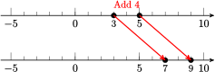Subtract the same quantity, say 6, from both sides, to get
\begin{align*} 3 \blert{ -6}\amp \lt 5 \blert{ -6} \\ -3 \amp\lt -1 \end{align*}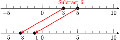Multiply both sides of the inequality by a positive number, say 2, to get
\begin{align*} \blert{ 2} (3) \amp \lt \blert{ 2} (5) \\ 6 \amp\lt 10 \end{align*}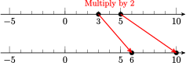Divide both sides by a positive number, say 4, to get
\begin{align*} \frac{3}{\blert{4}} \amp \lt \frac{5}{\blert{4}} \end{align*}Multiply both sides by a negative number, say \(-2\text{.}\)
\begin{align*} \blert{ -2} (3) \amp \lt \blert{ -2} (5) \\ -6 \amp\lt -10 \amp\amp\blert{\text{False!}} \end{align*}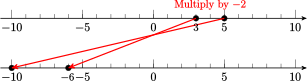
2.
Complete the box
If we or both sides of an inequality by the same quantity, we must the direction of the inequality.
3.
Fill in the correct symbol, \(\gt\) or \(\lt\text{,}\) in each statement
If \(~ x\gt 8\text{,}\) then \(~x-7 \underline{\qquad} 1 \text{.}\)
If \(~ x\lt -4\text{,}\) then \(~3x \underline{\qquad} -12 \text{.}\)
If \(~ x\gt -2\text{,}\) then \(~-9x \underline{\qquad} 18 \text{.}\)
4.
Solving inequalities
-
\(\begin{aligned} \amp \dfrac{x}{4}\ge -2 \amp\amp\blert{\text{What should you do to isolate } x?}\\ \amp\amp\amp \blert{\text{Should you reverse the direction of the inequality?}} \end{aligned}\)
\(\begin{aligned} \amp \blert{\text{Check:}} \amp\amp{\text{Is your answer reasonable:}}\\ \amp\amp\amp {\text{Is } -12 \text{ a solution?}}\\ \amp\amp\amp {\text{Is } -5 \text{ a solution?}} \end{aligned}\)
-
\(\begin{aligned} \amp -5x\ge 20 \amp\amp\blert{\text{What should you do to isolate } x?}\\ \amp\amp\amp \blert{\text{Should you reverse the direction of the inequality?}} \end{aligned}\)
\(\begin{aligned} \amp \blert{\text{Check:}} \amp\amp{\text{Is your answer reasonable:}}\\ \amp\amp\amp {\text{Is } -10 \text{ a solution?}}\\ \amp\amp\amp {\text{Is } 2 \text{ a solution?}} \end{aligned}\)
-
Solve \(~ 5-2x \le -3 ~\) and graph the solution on the number line
-
Solve \(~ -8 \lt 4-3x \lt 10 ~\) and graph the solution on the number line
Wrap-Up 1.21.
In this Lesson we practiced the following skills:
Solving equations with two or more operations
Writing equations to model applied problems
Solving inequalities
To solve an equation, in what order do we undo the operations?
Which operation does a fraction bar represent?
When we evaluate the expression \(5(z-6) \text{,}\) which operation do we perform first?
When should you reverse the direction of an inequality?
Solve.
1.
\(12=\dfrac{x}{6} \)
2.
\(\dfrac{5a}{3}=20 \)
3.
\(2(10z+18)=96 \)
4.
\(8-b=-3 \)
5.
\(-2t+18=-4 \)
6.
\(7-\dfrac{2m}{3}=-9 \)
7.
\(8-4x \gt -2 \)
8.
\(-6\le \dfrac{4-x}{3}\lt 2 \)
Solutions Answers to Homework Preview
1.1.
1.2.
1.3.
1.4.
1.5.
1.6.
1.7.
1.8.
Worksheet Lesson 2.5 Like Terms
Activity 1.28. Equivalent Expressions.
1.
-
Show that the expressions \(6+2x\) and \(8x\) are equal if \(x=1\text{:}\)
\begin{align*} 6+2x\amp= \underline{\hphantom{\qquad\qquad\qquad}} \\ 8x\amp= \underline{\hphantom{\qquad\qquad\qquad}} \end{align*} -
Show that the expressions \(6+2x\) and \(8x\) are not equal if \(x=2\text{:}\)
\begin{align*} 6+2x\amp= \underline{\hphantom{\qquad\qquad\qquad}} \\ 8x\amp= \underline{\hphantom{\qquad\qquad\qquad}} \end{align*} Are the expressions \(6+2x\) and \(8x\) equivalent?
2.
Explain the following phrases, and give an example of each.
equivalent expressions
like terms
numerical coefficient
3.
Combine like terms by adding or subtracting.
\(-2x+6x-x\)
\(3bc-(-4bc)-8bc \)
4.
Simplify by removing parentheses and combining like terms.
\(-5u-6uv+8uv+9u\)
\((32h-26)+(-3+h) \)
\((3a-2)-2a-(5-2a) \)
Activity 1.29. Solving Equations.
Steps for Solving Linear Equations.
- Combine like terms on each side of the equation.
- By adding or subtracting the same quantity on both sides of the equation, get all the variable terms on one side and all the constant terms on the other.
- Divide both sides by the coefficient of the variable to obtain an equation of the form \(x=a\text{.}\)
1.
Solve \(~ 4-5x=28+3x\text{.}\)
2.
Solve \(~ 10-6d-3d\ge 2-5d\text{.}\)
Activity 1.30. Like Terms and Parentheses.
1.
One angle of a triangle is three times the smallest angle, and the third angle is \(20\degree\) greater thant the smallest angle.
If the smallest angle is \(x\text{,}\) write expressions for the other two angles.
Write an expression for the sum of the three angles in terms of \(x\text{.}\)
2.
The StageLights theater group plans to sell T-shirts to raise money. It will cost them \(5x+60\) dollars to print \(x\) T-shirts, and they will sell the T-shirts at $12 each.
Write and simpllify an expression for their profit from selling \(x\) T-shirts.
How many T-shirts must they sell in order to make a profit of $500?
Wrap-Up 1.22.
In this Lesson we practiced the following skills:
Combining like terms
Solving linear equations
Writing equations for applied problems
Does \(6+2x=8x\text{?}\) Why or why not?
Explain how to simpify each side of an equation before beginning to solve.
-
What is wrong with this expression for the profit in Activity 1.30, problem 2?
\begin{equation*} 12x-5x+60 \end{equation*}
Simplify.
1.
\(-2x-16-(-5x)-4 \)
2.
\(-3ab+8a-(-5ab)-6a \)
3.
\((6bx+8x)-(2x-2bx)+(-5-3bx) \)
Solve.
4.
\(6p-8=-3p-26\)
5.
\(3x-5 \lt -6x+7\)
6.
\(12c-(3+6c)=3c+4-(8-2c) \)
Solutions Answers to Homework Preview
1.1.
1.2.
1.3.
1.4.
1.5.
1.6.
Worksheet Lesson 3.1 Intercepts
Activity 1.31. Intercept Method of Graphing.
1.
-
Find the \(x\)- and \(y\)-intercepts of the graph of
\begin{equation*} 3x-2y=12 \end{equation*} -
Graph the equation by the intercept method.
\(x\) \(y\) 0 \(\hphantom{000} \) \(\hphantom{000} \) 0 Plot a third point as a check.
2.
-
Find the \(x\)- and \(y\)-intercepts of the graph of
\begin{equation*} 2x=5y-10 \end{equation*} -
Graph the equation by the intercept method.
\(x\) \(y\) 0 \(\hphantom{000} \) \(\hphantom{000} \) 0 Plot a third point as a check.
Activity 1.32. Interpreting the Intercepts.
1.
Around 1950, people began cutting down the world's rain forests to clear land for agriculture. In 1970, there were about 9.8 million square kilometers of rain forest left, and by 1990 that figure had been reduced to 8.2 million square kilometers. These two data points are shown on the graph. The horizontal axis displays the year, \(x\text{,}\) and the vertical axis shows the amount of rainforest remaining, \(y\) (in millions of square kilometers).
If we continue to clear the rainforests at the same rate, the graph will be a straight line. Draw a straight line through the two points in the figure. Make your line long enough to cross both axes.
-
Estimate the coordinates of the \(x\)- and \(y\)-intercepts of your graph.
\begin{gather*} y\text{-intercept: } \underline{\qquad\qquad\qquad\qquad} \\ \\ x\text{-intercept: } \underline{\qquad\qquad\qquad\qquad} \end{gather*}Use the intercepts to answer the following questions:
How many million square kilometers of rainforest were present initially?
If we continue to clear the rainforest at the same rate, when will it be completely demolished?
2.
Sheri bought a bottle of multivitamins for her family. The number of vitamins left in the bottle after \(d\)days is given by
-
Find the intercepts and use them to make a graph of the equation.
\(d\) \(N\) 0 \(\hphantom{000} \) \(\hphantom{000} \) 0 Explain what each intercept tells us about the vitamins.
Wrap-Up 1.23.
In this Lesson we practiced the following skills:
Finding the intercepts of the a graph
Graphing a line by the intercept method
Interpreting the intercepts in context
In Activity 1.31, Problem 1, Delbert says that the intercepts are \((4,-6) \text{.}\) What is wrong with his statement?
In Activity 1.32, Problem 1, how did you find the answer to part (c)?
In Activity 1.32, Problem 2, what intervals did you use to scale each axis?
Find the \(x\)- and \(y\)-intercepts of the line.
Use the intercept method to graph the line.
1.
\(3x-5y=15 \)
2.
\(y= \dfrac{-4}{3+8} \)
3.
\(\dfrac{x}{6}+\dfrac{y}{8}=-1 \)
4.
\(x-\dfrac{2}{3}y-4=0 \)
Solutions Answers to Homework Preview
1.1.
1.2.
1.3.
1.4.
Worksheet Lesson 3.2 Ratio and Proportion
Activity 1.33. Ratios and Rates.
1.
On a Saturday evening, a restaurant found that 84 of its customers asked for the nonsmoking section, and 35 customers preferred the smoking section.
What was the ratio of smokers to nonsmokers?
Write the ratio in simplest form.
2.
Major Motors budgeted $5.6 million for research and development (R&D) next year and $3.5 million for advertising. What is the ratio of the amount budgeted for advertising to the amount budgeted for R&D?
3.
Bita made $240 for 25 hours of work last week. Express her rate of pay as a ratio, and then as a rate.
Activity 1.34. Proportions.
1.
Solve \(\dfrac{q}{3.2}=\dfrac{1.25}{4} \)
2.
If Sarah can drive 390 miles on 15 gallons of gas, how much gas will she need to travel 800 miles?
\(\begin{aligned} \amp\blert{\text{Assign a variable.}} \\ \\ \amp\blert{\text{Write a proportion.}} \\ \\ \amp\blert{\text{Solve the proportion.}} \\ \\ \\ \\ \amp\blert{\text{Solution:}} \end{aligned}\)
Activity 1.35. Proportional Variables.
1.
The table below shows the price \(p\) for \(q\) quarts of SereniTea. Plot the data on the grid. Then compute the ratio \(\dfrac{\text{Price}} {\text{Quarts}} \) for each data point.
| Quarts | Total Price | \(\dfrac{\text{Price}} {\text{Quarts}} \) |
| 4 | $6.00 | \(\dfrac{6.00} {4}= ~? \) |
| 6 | $9.00 | \(\dfrac{9.00} {6}= ~? \) |
| 9 | $13.50 | |
| 12 | $18.00 | |
| 15 | $22.50 |
2.
The table below shows the population \(P\) of a new suburb \(t\) years after it was built. Plot the data on the grid. Then compute the ratio \(\dfrac{\text{People}} {\text{Year}} \) for each data point.
| Years | Population | \(\dfrac{\text{People}} {\text{Year}} \) |
| 1 | 10 | \(\dfrac{10} {1}= ~? \) |
| 2 | 20 | \(\dfrac{20} {2}= ~? \) |
| 3 | 40 | |
| 4 | 80 | |
| 5 | 160 |
3.
At this point, can you make a conjecture (educated guess) about the graphs of proportional variables? To help you decide if your conjecture is true, continue with the graphs in parts 4 and 5.
Conjecture:
4.
Tuition at Woodrow University is $400 plus $30 per unit.
-
Write equation for tuition, \(T\text{,}\) in terms of the number of units, \(u\text{.}\)
\begin{equation*} T=\qquad\qquad \end{equation*} Use your equation to fill in the second column of the table.
Graph the equation on the grid.
-
Are the variables proportional? Compute their ratios to decide.
Units Tuition \(\dfrac{\text{Tuition}} {\text{Unit}} \) 3 5 8 10 12
5.
Anouk is traveling by train across Alaska at 60 miles per hour.
-
Write equation for the distance, \(D\text{,}\) Anouk has traveled in terms of hours, \(h\text{.}\)
\begin{equation*} D=\qquad\qquad \end{equation*} Use your equation to fill in the table.
Graph the equation on the grid.
-
Are the variables proportional? Compute their ratios to decide.
Hours Distance \(\dfrac{\text{Distance}} {\text{Hour}} \) 3 5 8 10 16
6.
Revise your conjecture about the graphs of proportional variables so that it applies to the graphs on this page as well.
Revised Conjecture:
Look at the two graphs of proportional variables. What is the \(y\)-intercept of both graphs?
Wrap-Up 1.24.
In this Lesson we practiced the following skills:
Comparing two quantities with a ratio or a rate
Solving a proportion
Writing a proportion to model a problem
Recognizing proportional variables
In Activity 1.33, Problem 2, did you express the ratio as a common fraction or as a decimal fraction? Why?
In Activity 1.34, Problem 3, did you use miles or gallons in the numerators of your ratios? Could you have used the other unit
In Activity 1.35, what did you learn about the graphs of proportional variables?
1.
A cake recipe asks for \(2\frac{1}{2} \) cups of flour and \(\frac{3}{4} \) cup of brown sugar. What is the ratio of flour to brown sugar?
2.
Decide whether the two variables are proportional:
| \(x\) | 2 | 5 | 10 | 16 |
| \(y\) | 3.2 | 8 | 16 | 25.6 |
3.
Write and solve a proportion to answer the question:
On a map of Chesterfield County, 1 inch represents \(4\frac{1}{2} \) miles. If Richmond and Petersburg and \(6\frac{2}{3} \) inches apart on the map, what is the actual distance between the two towns?
Solutions Answers to Homework Preview
1.1.
1.2.
1.3.
Worksheet Lesson 3.3 Slope
Activity 1.36. Calculating Slope.
To calculate slope, we choose two points on the graph and compute the ratio
Be sure to include units with your ratios!
1.
The table below shows the price \(p\) for \(q\) quarts of SereniTea.
| Quarts | 4 | 6 | 9 | 12 | 15 |
| Total Price | $6.00 | $9.00 | $13.50 | $18.00 | $22.50 |
Plot the data on the grid.
-
Choose two points from the graph and use them to compute the slope.
\(\begin{aligned} \amp\blert{\text{First point:}}\\ \amp\blert{\text{Second point:}}\\ \amp\blert{\text{Change in vertical coordinates}} \amp\amp \blert{\Delta p =}\\ \amp\blert{\text{Change in horizontal coordinates}} \amp\amp \blert{\Delta q =}\\ \amp\blert{\text{Slope}} \amp\amp \blert{\dfrac{\Delta p}{\Delta q} =} \end{aligned}\)
Illustrate the slope on the graph.
Write the slope as a rate of change, including units. What does the slope tell you about the variables?
2.
The table below shows the population \(P\) of a new suburb \(t\) years after it was built.
| Years | 1 | 2 | 3 | 4 | 5 |
| Population | 10 | 20 | 40 | 80 | 160 |
Plot the data on the grid.
-
Choose two points from the graph and use them to compute the slope
\(\begin{aligned} \amp\blert{\text{First point:}}\\ \amp\blert{\text{Second point:}}\\ \amp\blert{\text{Change in vertical coordinates}} \amp\amp \blert{\Delta P =}\\ \amp\blert{\text{Change in horizontal coordinates}} \amp\amp \blert{\Delta t =}\\ \amp\blert{\text{Slope}} \amp\amp \blert{\dfrac{\Delta P}{\Delta t} =} \end{aligned}\)
Illustrate the slope on the graph. Is the slope the same between all points?
Write the slope as a rate of change, including units. What does the slope tell you about the variables?
3.
Tuition at Woodrow University is $400 plus $30 per unit.
-
Write equation for tuition, \(T\text{,}\) in terms of the number of units, \(u\text{.}\)
\begin{equation*} T=\qquad\qquad\qquad \end{equation*} -
Use your equation to fill in the table.
Units 3 5 8 10 12 Tuition \(\hphantom{0000} \) \(\hphantom{0000} \) \(\hphantom{0000} \) \(\hphantom{0000} \) \(\hphantom{0000} \) Graph the equation on the grid.
-
Choose two points from the graph and use them to compute the slope.
\(\begin{aligned} \amp\blert{\text{First point:}}\\ \amp\blert{\text{Second point:}}\\ \amp\blert{\text{Change in vertical coordinates}} \amp\amp \blert{\Delta T =}\\ \amp\blert{\text{Change in horizontal coordinates}} \amp\amp \blert{\Delta u =}\\ \amp\blert{\text{Slope}} \amp\amp \blert{\dfrac{\Delta T}{\Delta u} =} \end{aligned}\)
Illustrate the slope on the graph. Is the slope the same between all points?
Write the slope as a rate of change, including units. What does the slope tell you about the variables?
4.
Anouk is traveling by train across Alaska at 60 miles per hour.
-
Write equation for the distance, \(D\text{,}\) Anouk has traveled in terms of hours, \(h\text{.}\)
\begin{equation*} D=\qquad\qquad\qquad \end{equation*} -
Use your equation to fill in the table.
Hours 3 5 8 10 16 Distance \(\hphantom{0000} \) \(\hphantom{0000} \) \(\hphantom{0000} \) \(\hphantom{0000} \) \(\hphantom{0000} \) Graph the equation on the grid.
-
Choose two points from the graph and use them to compute the slope.
\(\begin{aligned} \amp\blert{\text{First point:}}\\ \amp\blert{\text{Second point:}}\\ \amp\blert{\text{Change in vertical coordinates}} \amp\amp \blert{\Delta D =}\\ \amp\blert{\text{Change in horizontal coordinates}} \amp\amp \blert{\Delta h =}\\ \amp\blert{\text{Slope}} \amp\amp \blert{\dfrac{\Delta D}{\Delta h} =} \end{aligned}\)
Illustrate the slope on the graph.
Write the slope as a rate of change, including units. What does the slope tell you about the variables?
5.
Which of the four graphs will give different values for the slope, depending on which points you choose?
What is different about this graph, compared to the other three graphs?
Activity 1.37. Negative Slopes.
An increasing quantity has a positive rate of change, or slope, and a decreasing quantity has a negative rate of change.
When we move to the right on the graph, \(\Delta x\) is positive.
When we move to the left, \(\Delta x\) is negative.
When we move up on the graph, \(\Delta y\) is positive.
When we move down, \(\Delta y\) is negative.
1.
The value of new office equipment decreases, or depreciates, over time. The graph shows the value, \(V\text{,}\) in thousands of dollars, of a large copy machine \(t\) years after it was purchased.
Compute the slope of the line by moving from point \(A\) to point \(B\text{.}\)
What does the slope tell you about the value of the machine?
Compute the slope by moving from point \(B\) to point \(A\text{.}\)
It doesn't matter which direction we move along a line to compute its slope; the answer will be the same.
2.
Find the slope of each line segment. Verify that you get the same answer if you move in the opposite direction. (Each square counts for one unit.)
- 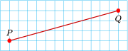
- 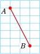
- 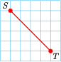
Activity 1.38. Lines Have Constant Slope.
How do we know which two points to choose when we want to compute the slope of a line? It turns out that any two points on the line will do.
1.
Calculate the slope of the line \(y=\dfrac{2}{3}x-2 \) shown in the figure:
By using the points \(P(-3,-4) \) and \(Q(3,0) \text{.}\)
By using the points \(R(6,2) \) and \(S(0,-2) \text{.}\)
Do you get the same value for the slope in each case?
No matter which two points we use to calculate the slope of a line, we will always get the same result.
2.
Graph the line
\begin{equation*} 4x-2y=8 \end{equation*}by finding the \(x\)- and \(y\)-intercepts
\(x\) \(y\) 0 \(\hphantom{000} \) \(\hphantom{000} \) 0 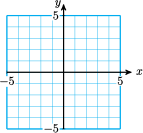-
Compute the slope of the line using the \(x\)-intercept and \(y\)-intercept.
\begin{equation*} m=\frac{Delta y}{\Delta x}= \hphantom{0000000000000000000} \end{equation*} -
Compute the slope of the line using the points \((4,4) \) and \((1,-2) \text{.}\)
\begin{equation*} m=\frac{\Delta y}{\Delta x}= \hphantom{0000000000000000000} \end{equation*}
Wrap-Up 1.25.
In this Lesson we practiced the following skills:
Computing the slope of a line
Interpreting the slope as a rate of change
In Activity 1.36, Problem 2, which of the four graphs was not a straight line?
What does the sign of the slope tell you about the graph?
Delbert says that if both intercepts of a line are positive, then the slope is positive also. Is he correct? Explain why or why not.
Use the intercepts to find the slope of the line. Illustrate the slope on the graph.
1.
\(5x-3y=15\)
| \(x\) | 0 | \(\hphantom{00000} \) |
| \(y\) | \(\hphantom{00000} \) | 0 |
\(m=\)
2.
\(y=\dfrac{3}{4}x-6 \)
| \(x\) | 0 | \(\hphantom{00000} \) |
| \(y\) | \(\hphantom{00000} \) | 0 |
\(m=\)
3.
\(\dfrac{x}{6}+\dfrac{y}{8}=1 \)
| \(x\) | 0 | \(\hphantom{00000} \) |
| \(y\) | \(\hphantom{00000} \) | 0 |
\(m=\)
4.
\(x+\dfrac{2}{3}y+4=0 \)
| \(x\) | 0 | \(\hphantom{00000} \) |
| \(y\) | \(\hphantom{00000} \) | 0 |
\(m=\)
Plot the points and find the slope of the line between them.
5.
\((-2,8) \) and \((4,-6) \)
\(m=\)
6.
\((-7,-3) \) and \((5,9) \)
\(m=\)
7.
If \(m=\dfrac{4}{5} \text{,}\) and \(\Delta x=-6\text{,}\) find \(\Delta y\text{.}\)
8.
If \(m=\dfrac{-3}{2} \text{,}\) and \(\Delta y=6\text{,}\) find \(\Delta x\text{.}\)
Solutions Answers to Homework Preview
1.1.
1.2.
1.3.
1.4.
1.5.
1.6.
1.7.
1.8.
Worksheet Lesson 3.4 Slope-Intercept Form
Activity 1.39. The Slope and the \(y\)-intercept.
1.
-
Tuition at Woodrow University is $400 plus $30 per unit. Write equation for tuition, \(W\text{,}\) in terms of the number of units, \(u\text{,}\) and fill in the table below.
\begin{equation*} W=\hphantom{\qquad\qquad\qquad\qquad} \end{equation*} -
At Xavier College, the tuition, \(X\text{,}\) is $200 plus $30 per unit. Write an equation for \(X\) and fill in the table.
\begin{equation*} X=\hphantom{\qquad\qquad\qquad\qquad} \end{equation*} -
At the Yardley Institute the tuition, \(Y\text{,}\) is $30 per unit. Write equation for \(Y\) and fill in the table.
\begin{equation*} Y=\hphantom{\qquad\qquad\qquad\qquad} \end{equation*} -
Graph all three equations on the grid.
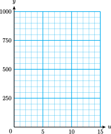\(h\) \(A\) \(B\) \(C\) 3 \(\hphantom{0000} \) \(\hphantom{0000} \) \(\hphantom{0000} \) 5 \(\hphantom{0000} \) \(\hphantom{0000} \) \(\hphantom{0000} \) 8 \(\hphantom{0000} \) \(\hphantom{0000} \) \(\hphantom{0000} \) 10 \(\hphantom{0000} \) \(\hphantom{0000} \) \(\hphantom{0000} \) 16 \(\hphantom{0000} \) \(\hphantom{0000} \) \(\hphantom{0000} \) -
Find the slope and the \(y\)-intercept for each equation.
\(\begin{aligned} \amp\blert{A:}\amp\amp\blert{\text{slope}=}\qquad\amp\amp\blert{y\text{-intercept}=}\\ \amp\blert{B:}\amp\amp\blert{\text{slope}=}\amp\amp\blert{y\text{-intercept}=}\\ \amp\blert{C:}\amp\amp\blert{\text{slope}=}\amp\amp\blert{y\text{-intercept}=}\\ \end{aligned}\)
How are your results from part (e) reflected in the graphs of the equations?
2.
-
Anouk is traveling by train across Alaska at 60 miles per hour. Write an equation for the distance, \(A\text{,}\) Anouk has traveled in terms of hours, \(h\text{,}\) and fill in the table below.
\begin{equation*} A=\hphantom{\qquad\qquad\qquad\qquad} \end{equation*} -
Boris is traveling by snowmobile at 30 miles per hour. Write an equation for Boris' distance, \(B\text{,}\) and fill in the table.
\begin{equation*} B=\hphantom{\qquad\qquad\qquad\qquad} \end{equation*} -
Chaka is traveling in a small plane at 100 miles per hour. Write an equation for Chaka's distance, \(C\text{,}\) and fill in the table.
\begin{equation*} C=\hphantom{\qquad\qquad\qquad\qquad} \end{equation*} -
Graph all three equations on the grid.
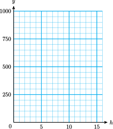\(u\) \(W\) \(X\) \(Y\) 3 \(\hphantom{0000} \) \(\hphantom{0000} \) \(\hphantom{0000} \) 5 \(\hphantom{0000} \) \(\hphantom{0000} \) \(\hphantom{0000} \) 8 \(\hphantom{0000} \) \(\hphantom{0000} \) \(\hphantom{0000} \) 10 \(\hphantom{0000} \) \(\hphantom{0000} \) \(\hphantom{0000} \) 12 \(\hphantom{0000} \) \(\hphantom{0000} \) \(\hphantom{0000} \) -
Find the slope and the \(y\)-intercept for each equation.
\(\begin{aligned} \amp\blert{W:}\amp\amp\blert{\text{slope}=}\qquad\amp\amp\blert{y\text{-intercept}=}\\ \amp\blert{X:}\amp\amp\blert{\text{slope}=}\amp\amp\blert{y\text{-intercept}=}\\ \amp\blert{Y:}\amp\amp\blert{\text{slope}=}\amp\amp\blert{y\text{-intercept}=}\\ \end{aligned}\)
How are your results from part (e) reflected in the graphs of the equations?
3.
Let's summarize the results of the Activity. In part 1 we graphed three equations:
All of these equations have the same , namely 30, but different \(y\)intercepts. In each case the \(y\)-intercept is the same as the term in the equation. (This makes sense, because we find the \(y\)-intercept by setting \(u=0\text{.}\))
In part 2 we graphed
All of these equations pass through the origin, so their \(y\)intercepts are all , but each has a different . In each case the slope is the same as the coefficient of \(h\) in the equation. This also makes sense if you think about it: if we increase \(h\) by one hour, then \(A\) increases by 60 miles, \(B\) increases by 30 miles, and \(C\) increases by 100 miles.
Activity 1.40. Slope-Intercept Form.
1.
Write an equation for the line whose \(y\)-intercept is \((0,-3) \) and whose slope is \(-\frac{2}{3} \text{.}\)
-
Use the slope-intercept method to graph the equation
\(\begin{aligned} \amp\blert{\text{Plot the }y\text{-intercept}.}\\ \\ \amp\blert{\text{Use the slope } m=\dfrac{\Delta y}{\Delta x}=\dfrac{-2}{3}\text{ to}}\\ \amp\blert{\text{plot another point.}}\\ \\ \amp\blert{\text{Use the slope } m=\dfrac{\Delta y}{\Delta x}=\dfrac{2}{-3}\text{ to}}\\ \amp\blert{\text{plot another point.}} \end{aligned}\)
2.
State the slope and \(y\)-intercept of the equation \(y=-3x+4\)
-
Graph the equation by the slope-intercept method.
Hint: Write the slope as a fraction,
\begin{equation*} m=\frac{\Delta y}{\Delta x}=\frac{-3}{1}=\frac{3}{-1} \end{equation*}
3.
On Memorial Day weekend, Arturo drives from his home to a cabin on Diamond Lake. His distance in miles from Diamond Lake after \(x\) hours of driving is given by \(y=450-50x\)
What are the slope and \(y\)-intercept of the graph of this equation?
Graph the equation.
-
What does your \(y\)-intercept tell you about the problem
What does the slope tell you about the problem?
Wrap-Up 1.26.
In this Lesson we practiced the following skills:
Writing an equation in slope-intercept form
Identifying the slope and \(y\)-intercept of a line from its equation
Graphing a linear equation by the slope-intercept method
Interpreting the slope and \(y\)-intercept in context
In Activity 1.39, Problem 1, what do the slopes of the lines represent?
What do the slopes of the lines represent in Activity 1.39, Problem 2?
In Activity 1.40, part 1, does the negative sign in front of \(\frac{2}{3} apply to the numberator, the denominator, or both? \text{.}\)
In Activity 1.40, part 3, what does the \(x\)-intercept of the line represent?
In Activity 1.40, Problem 3, why does it make sense that the slope is negative?
Put the equation in slope-intercept form.
Graph the line by the slope-intercept method.
1.
\(12x-8y=16\)
2.
\(4x+3y=0\)
Write the equation of the line in slope-intercept form.
3.
4.
Solutions Answers to Homework Preview
1.1.
1.2.
1.3.
1.4.
Worksheet Lesson 3.5 Properties of Lines
Activity 1.41. The Slope and the \(y\)-intercept.
a.
Put each equation into slope-intercept form.
\(\begin{aligned} \amp l_1: \quad 2x-3y+3=0\amp \qquad\qquad\qquad \amp l_2: \quad 2x+3y-6=0\\ \\ \\ \\ \amp l_3: \quad 3x+2y-2=0\amp\amp l_4: \quad 2x-3y-2=0 \\ \end{aligned}\)
b.
Which of the four lines in part (a) are parallel? How do you know?
c.
Which of the four lines in part (a) are perpendicular? How do you know?
Activity 1.42. Horizontal and Vertical Lines.
a.
Sketch a graph of the vertical line passing through \((-4,-1) \text{,}\) then find its equation. What is the slope of the line?
\(\begin{aligned} \amp l_1: \quad 2x-3y+3=0\amp \qquad\qquad\qquad \amp l_2: \quad 2x+3y-6=0\\ \\ \\ \\ \amp l_3: \quad 3x+2y-2=0\amp\amp l_4: \quad 2x-3y-2=0 \\ \end{aligned}\)
\(\blert{\text{Equation}:} \)
\(\blert{\text{Slope}:} \)
\(\blert{\text{Equation}:} \)
\(\blert{\text{Slope}:} \)
b.
Sketch a graph of the horizontal line passing through \((-4,-1) \text{,}\) then find its equation. What is the slope of the line?
Activity 1.43. Slope.
1.
Compute the slope of the line segment joining \(A\) and \(C\) in two ways.
Using the graph.
Draw the line through \(A\) and \(C\text{.}\) Use the point \(B\) to find \(\Delta y\) and \(\Delta x\text{.}\)
\begin{align*} \Delta y \amp = \underline{\qquad\quad}, \quad \Delta x = \underline{\qquad\quad}, \\ m \amp = \frac{\Delta y}{\Delta x}= \end{align*}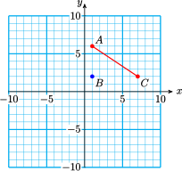-
Using coordinates.
- Step 1
-
Write down the coordinate of \(A\text{.}\)
\begin{gather*} A\underline{\qquad\qquad}\\ \quad \end{gather*}Write down the coordinate of \(C\text{.}\)
\begin{gather*} C\underline{\qquad\qquad} \end{gather*}
- Step 2
-
Compute \(\Delta y\) and \(\Delta x\text{.}\)
\begin{align*} \Delta x \amp = \underline{\qquad\qquad\qquad}\\ \amp \qquad\blert{\text{final}-\text{initial}} \\ \Delta y \amp = \underline{\qquad\qquad\qquad}\\ \amp \qquad\blert{\text{final}-\text{initial}} \end{align*}
- Step 3
Compute the slope: \(\quad m=\dfrac{\Delta y}{\Delta x} \)
Do you get the same answers for parts (a) and (b)? You should!
2.
Follow the steps to compute the slope of the line segment joining \(H\) and \(K\text{.}\)
- Step 1
-
Let \(H\) be the first point and \(K\) be the second point. Write down their coordinates.
\begin{gather*} H(x_1,y_1)=\qquad\qquad\qquad \\ K(x_2,y_2)=\qquad\qquad\qquad \end{gather*} - Step 2
-
Fill in the blanks.
\begin{align*} y_2\amp = \underline{\qquad\qquad}, \qquad y_1\amp = \underline{\qquad\qquad} \\ x_2\amp = \underline{\qquad\qquad}, \qquad x_1\amp = \underline{\qquad\qquad} \end{align*} - Step 3
-
Compute \(\Delta y\) and \(\Delta x\text{.}\)
\begin{align*} \Delta y \amp = y_2-y_1=\\ \\ \Delta x \amp = x_2-x_1= \end{align*} - Step 4
Compute the slope: \(~m=\dfrac{y_2-y_1}{x_2-x_1} \)
3.
Use the formula \(m=\dfrac{y_2-y_1}{x_2-x_1} \) to compute the slope of the line joining \((-4,-7) \) and \((2,-3) \text{.}\)
Wrap-Up 1.27.
In this Lesson we practiced the following skills:
Finding equations for parallel or perpendicular lines
Finding equations for horizontal or vertical lines
Using the slope formula
How can you decide if two lines are parallel, perpendicular, or neither?
How many points do you need to find the equation of a horizontal or a vertical line?
Explain the difference between the equation of a horizontal or vertical line and the slope of the line.
Explain why the two-point formula for slope is the same as our old formula, \(m=\dfrac{\Delta y}{\Delta x} \)
1.
Are the lines paralle, perpendicular, or neither?
2.
Sketch a graph of each equation, label the coordinates of its intercept, and state the slope of the line.
-
\(y=-6\)
-
\(x=-2\)
3.
Find the slope of the line through \((-2,3) \) and \((1,-5) \text{.}\) Graph the line.
\(m=\)
4.
Find the slope of the line through \((-2,3) \) and \((1,-5) \text{.}\) Graph the line.
\(m=\)
Solutions Answers to Homework Preview
1.1.
1.2.
1.3.
1.4.
Worksheet Lesson 4.1 The Distributive Law
Activity 1.44. Simplifying Expressions.
1.
Simplify each product.
\(6(-2b) \)
\(-4(-7w) \)
2.
Use the distributive law to simplify each expression.
\(8(3y-6) \)
\(-3(7+5x) \)
Activity 1.45. Solving Equations.
Steps for Solving Linear Equations.
- Use the distributive law to remove any parentheses.
- Combine like terms on each side of the equation.
- By adding or subtracting the same quantity on both sides of the equation, get all the variable terms on one side and all the constant terms on the other.
- Divide both sides by the coefficient of the variable to obtain an equation of the form \(x=a\text{.}\)
1.
Solve \(\quad 2n+(4-3n)\ge 6-(3-2n) \text{.}\)
2.
Solve \(\quad 6-3(x-2)=4x-(x+8) \text{.}\)
Activity 1.46. Problem Solving.
1.
Shalia runs a landscaping business. She has a budget of $385 to buy 20 rose bushes for one of her clients. Hybrid tea roses cost $21 each, and shrub roses cost $16.
If Shalia buys \(x\) tea roses, write an expression for the number of shrub roses she needs.
Write expressions for the cost of the tea roses and the cost of the shrub roses.
Write and simplify an expression for the total cost of the roses.
2.
One angle of a triangle is three times the smallest angle, and the third angle is \(20\degree\) greater than the smallest angle. Find the degree measure of each angle.
- Step 1
-
Let \(x\) represent the smallest angle, and write expressions for the other two angles.
\begin{align*} \amp\blert{\text{Second angle:}} \qquad\qquad\qquad\qquad\qquad\qquad\amp \\ \amp\blert{\text{Third angle:}} \end{align*} - Step 2
Write an equation, using the fact that the sum of the three angles of a triangle is \(180\degree\text{.}\)
- Step 3
Solve the equation. Begin by simplifying the left side.
Write your answer in a sentence:
Wrap-Up 1.28.
In this Lesson we practiced the following skills:
Applying the distributive law
Solving linear equations
Writing equations for applied problems
Explain the difference between \(6(-2b) \) and \(6(-2+b) \text{.}\) Which law or property do you apply to simplify each expression?
Explain how to simplify each side of an equation before beginning to solve.
What formula did you use in Problem 2 of Activity 1.46?
Simplify.
1.
\(8-3(2x+4)-3x-2 \)
2.
\(3a-4-3(2a-5) \)
3.
\(-4(-6t)+2 \)
\(-4(-6t+2) \)
\(-4-6t-22 \)
\((-4-6t)(-2) \)
Solve.
4.
\(-9+2(9+4z)=-23 \)
5.
\(35=4(2w+5)-3w \)
6.
\(4(2-3w)=9-3(2w-1) \)
Solutions Answers to Homework Preview
1.1.
1.2.
1.3.
1.4.
1.5.
1.6.
Worksheet Lesson 4.2 Systems of Linear Equations
Activity 1.47. Solving Systems by Graphing.
A biologist wants to know the average weights of two species of birds in a wildlife preserve. She sets up a feeder whose platform is actually a scale, and mounts a camera to monitor the feeder. She waits until the feeder is occupied only by members of the two species she is studying, robins and thrushes. Then she takes a picture, which records the number of each species on the scale, and the total weight registered.
From her two best pictures, she obtains the following information. The total weight of three thrushes and six robins is 48 ounces, and the total weight of five thrushes and two robins is 32 ounces.
1.
We begin by assigning variables to the two unknown quantities:
Write two equations about the weights of the birds:
\(\blert{\text{Eqn. (1)}} \)
\(\blert{\text{Eqn. (2)}} \)
2.
Use the intercept method to graph each equation on the grid at right.
| \(\blert{\text{Eqn (1)}} \) | \(\blert{\text{Eqn (2)}} \) | |||
| \(t\) | \(r\) | \(\hphantom{000000}\) | \(t\) | \(r\) |
| \(0\) | \(\hphantom{0000}\) | \(\hphantom{000000}\) | \(0\) | \(\hphantom{0000}\) |
| \(\hphantom{0000}\) | \(0\) | \(\hphantom{000000}\) | \(\hphantom{0000}\) | \(0\) |
3.
Locate the point where the two graphs intersect. What are its coordinates?
Answer the question posed by the biologist.
Activity 1.48. Problem Solving.
The manager for Books for Cooks plans to spend $300 stocking a new diet cookbook. The paperback version costs her $5, and the hardback costs $10. She finds that she will sell three times as many paperbacks as hardbacks. How many of each should she buy?
Let \(x\) represent the number of hardbacks and \(y\) the number of paperbacks she should buy.
Write an equation about the cost of the books.
Write a second equation about the number of each type of book.
Graph both equations on the grid and solve the system. Then answer the question in the problem.
Activity 1.49. Inconsistent and Dependent Systems.
Robert and Ruth are moving from Los Angeles to Baltimore. Robert is driving a rental truck at an average speed of 50 miles per hour. Ruth leaves one day later in their car, and averages 65 miles per hour. When Ruth set out, Robert had already traveled 300 miles. When will Ruth catch up with Robert?
1.
Let \(t\) stand for the number of hours that Ruth has traveled. When she catches up with Robert, they will both have traveled the same distance, so we begin by writing equations for the distance, \(d\text{,}\) each has traveled after \(t\) hours.
-
Ruth travels at 65 miles per hour, so an equation for the distance she has traveled is
\(\hphantom{0000000000}\text{Ruth:} \)
-
Robert's speed is 50 miles per hour, but he has already traveled 300 miles when Ruth starts, so his distance is given by
\(\hphantom{0000000000}\text{Robert:} \)
Together, the two equations form a system:
2.
Next, we graph both equations on the same axes.
The graph of Robert's distance is shown in the figure. The \(d\)-intercept of the graph is 300 and its slope is 50.
-
To graph the equation for Ruth's distance, it is probably easiest to plot a few points. Fill in the table and graph the equation for Ruth's distance on the same grid with Robert's distance.
\(t\) 0 10 20 \(d\) \(\hphantom{00000} \) \(\hphantom{00000} \) \(\hphantom{00000} \) Locate the point where the two graphs intersect. What are its coordinates?
3.
Finally, we interpret the solution
What does the \(t\)-coordinate of the intersection point tell you about the problem?
What does the \(d\)-coordinate of the point tell you?
Verify that the intersection point is a solution of both equations in the system.
4.
Now let's change the problem and suppose instead that Ruth and Robert both drive at an average speed of 50 miles per hour.
-
Write a system of equations for this problem:
\(\begin{aligned} \amp\text{Robert:}\amp d\amp =\\ \amp\text{Ruth:}\amp d\amp =\\ \end{aligned}\)
Graph both equations on the grid.
What is the solution of this system? What is this type of system called?
5.
-
Graph the system of equations.
\begin{align*} 3x\amp =2y+6\\ y\amp = \frac{3}{2}x-3 \end{align*}Hint: Use the intercept method to graph the first equation, and the slope-intercept method to graph the second equation.
Is the system inconsistent or dependent?
Wrap-Up 1.29.
In this Lesson we practiced the following skills:
Deciding whether an ordered pair is a solution of a system
Solving a system of equations by graphing
Identifing a system as consistent, inconsistent, or dependent
Writing a system of equations to solve an applied problem
In Activity 1.48, which equation is correct, \(x=3y\) or \(y=3x\text{?}\) Why?
In Activity 1.48, how much did the manager spend on hardback books? How much in paperback books?
In Activity 1.49, how far has Robert traveled at \(t=0\text{?}\)
In Activity 1.49, Problem 4, explain why it makes sense that the system has no solution.
1.
Is \((-3,5) \) a solution to the system? Explain how you know.
2.
Solve the sytem by graphing
Hint: graph the first equation by the slope-intercept method, and the second equation by the intercept method
3.
Write a system of equations for the problem: Kathy has two cats, Miso and Nori. Together they weigh 18 pounds. Miso's weight is 3 pounds more than half of Nori's weight. How much does each cat weigh?
4.
Decide whether the system is inconsistent or dependent.
Solutions Answers to Homework Preview
1.1.
1.2.
1.3.
1.4.
Worksheet Lesson 4.3 Algebraic Solution of Systems
Activity 1.50. Substitution Method.
1.
Solve the system algebraically:
2.
Follow the suggested steps to solve the system by substitution:
\(\begin{aligned} \amp\blert{\text{Step 1}}\amp\amp\blert{\text{Solve the second equation for }x \text{ in}}\\ \amp\amp\amp \blert{\text{terms of }y.}\\ \\ \amp\blert{\text{Step 2}}\amp\amp\blert{\text{Substitute your expression for }x }\\ \amp\amp\amp \blert{\text{into the first equation.}}\\ \\ \amp\blert{\text{Step 3}}\amp\amp\blert{\text{Solve the equation your got in Step 2.}}\\ \\ \amp\blert{\text{Step 4}} \amp\amp\blert{\text{Substitute the }y \text{-value into your}}\\ \amp \amp\amp\blert{\text{result from Step 1 to find } x.}\\ \\ \amp\blert{\text{Check}}\amp\amp\blert{\text{Verify that your solution values }}\\ \amp \amp\amp\blert{\text{satify both equations in the }}\\ \amp \amp\amp\blert{\text{system.}}\\ \end{aligned}\)
Activity 1.51. Elimination Method.
1.
Follow the suggested steps to solve the system by elimination:
For this problem, we will eliminate the \(x\)-terms so we arrange for their coefficients to be opposites.
\(\begin{aligned} \amp\blert{\text{Step 1}}\amp\amp\blert{\text{Multiply each term of the first }}\\ \amp\amp\amp \blert{\text{equation by } {-2}.}\\ \\ \amp\blert{\text{Step 2}}\amp\amp\blert{\text{Add the new equations and solve } }\\ \amp\amp\amp \blert{\text{the result for }y.}\\ \\ \amp\blert{\text{Step 3}}\amp\amp\blert{\text{Substitute your value for } y \text{ into the}}\\ \amp\amp\amp \blert{\text{first equation and solve for } x.}\\ \\ \amp\blert{\text{Check}}\amp\amp\blert{\text{Verify that your solution values }}\\ \amp \amp\amp\blert{\text{satify both equations in the }}\\ \amp \amp\amp\blert{\text{system.}}\\ \end{aligned}\)
2.
Follow the suggested steps to solve the system by elimination:
For this problem, we will eliminate the \(y\)-terms.
\(\begin{aligned} \amp\blert{\text{Step 1}}\amp\amp\blert{\text{Write each equation in the form }}\\ \amp\amp\amp \blert{ Ax + By = C.}\\ \\ \amp\blert{\text{Step 2}}\amp\amp\blert{\text{Find the LCM of the } y\text{-coefficients.} }\\ \amp\amp\amp \blert{\text{Multiply each equation by an}}\\ \amp \amp\amp \blert{\text{appropriate constant.}}\\ \\ \amp\blert{\text{Step 3}}\amp\amp\blert{\text{Add the new equations and solve } }\\ \amp\amp\amp \blert{\text{the result for } x.}\\ \\ \amp\blert{\text{Step 4}} \amp\amp\blert{\text{Substitute your value for } x \text{ into the}}\\ \amp \amp\amp\blert{\text{second equation and solve for } y.}\\ \\ \amp\blert{\text{Check}}\amp\amp\blert{\text{Verify that your solution values }}\\ \amp \amp\amp\blert{\text{satify both equations in the }}\\ \amp \amp\amp\blert{\text{system.}}\\ \end{aligned}\)
3.
-
Follow the suggested steps to solve the system by elimination:
\begin{align*} x + 3y\amp=6\\ 2x-12\amp=-6y \end{align*} Is the system dependent, inconsistent, or consistent and independent?
Activity 1.52. Applications.
1.
A train ticket from Camarillo to San Diego costs $31 in coach and $47 for business class. On Tuesday, there were 42 passengers on the morning train, and Amtrak took in $1494 in fares. How many coach passengers took the morning train, and how many business class passengers?
\(\begin{aligned} \blert{\text{Choose variables:}\qquad}\amp \blert{x=}\\ \amp \blert{y=} \end{aligned}\)
\(\blert{\text{Complete the table:}} \)
| \(\blert{\text{Number of}}\) \(\blert{\text{passengers}} \) |
\(\blert{\text{Price per}}\) \(\blert{\text{ticket}} \) |
\(\blert{\text{Total}}\) \(\blert{\text{revenue}} \) |
|
| \(\blert{\text{Coach}} \) | |||
| \(\blert{\text{Business}} \) |
\(\blert{\text{Write an equation about the number of passengers:}} \)
\(\blert{\text{Write an equation about the revenue:}} \)
\(\begin{aligned}\amp \blert{\text{Solve your system.}}\\ \\ \\ \\ \amp \blert{\text{Answer:}} \\ \end{aligned} \)
2.
The perimeter of a rectangular playground is 197 yards, and its length is 5 yards less than twice its width. Find the dimensions of the playground.
\(\begin{aligned} \blert{\text{Choose variables:}\qquad}\amp \blert{x=}\\ \amp \blert{y=} \\ \end{aligned}\)
\(\begin{aligned} \amp \blert{\text{Write an equation about the }} \\ \amp \blert{\text{perimeter of the playground:}}\\ \\ \amp \blert{\text{Write an equation relating the }}\\ \amp \blert{\text{length and the width:}}\\ \\ \amp \blert{\text{Solve your system.}}\\ \\ \\ \\ \amp \blert{\text{Answer:}} \\ \end{aligned}\)
Wrap-Up 1.30.
In this Lesson we practiced the following skills:
Solving systems by the substitution method
Solving systems by the elimination method
Identifing a system as consistent, inconsistent, or dependent
Writing a system of equations to solve an applied problem
In Activity 1.50, Problem 2, why did we choose to solve the second equation for \(x\) in terms of \(y\text{?}\)
In Activity 1.51, Problem 1, why did we multiply the first equation by \(-2\text{?}\)
In Activity 1.51, Problem 2, what was the LCM of the \(y\)-coefficients?
In Activity 1.52, Problem 1, what were the two equations about?
1.
Solve the system by substitution: \(\qquad\qquad\begin{aligned}[t] 3x-y\amp = 5\\ 2x-3y\amp = 8\\ \end{aligned} \)
2.
Solve the system by elimination: \(\qquad\qquad\begin{aligned}[t] 2x-9y\amp = 3\\ 4x-5y\amp = -7\\ \end{aligned} \)
3.
Solve the system by elimination: \(\qquad\qquad\begin{aligned}[t] 5x+2y\amp = 5\\ 4x+3y\amp = -3\\ \end{aligned} \)
4.
Decide whether the system is dependent or inconsistent.